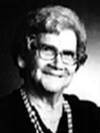

notre ancêtre de la 8ième génération
fiche familiale
 |
Lionel Rivest décède à l'âge de 76 ans. Naissance le 7 mai 1899 à St-Alphonse-Rodriguez, cté Joliette. Baptême le 7 mai 1899 à St-Alphonse-Rodriguez Dit "Léonel". Inscrit sous Joseph, Hermas, Lionel au registre des baptêmes de l'église de St-Alphonse-Rodriguez. Parrain Exide Thériault cultivateur, marraine Délima Ricard de cette paroisse. Décès le 13 février 1976 à l'Hôpital Ste-Famille de Ville-Marie. Funérailles le 16 février 1976 à St-Isidore de Laverlochère. Sépulture au cimetière de Laverlochère. Parrain de Lucie Lambert, Lucile Rivest, Jacques Rivest, Ginette Paradis, Jocelyn, Joceline, Jasmin, Danielle et Michel Rivest. (Son histoire) Père: Urgel Rivet Rivest Mère: Agnès Piquette Piquet (sa famille) |
Mariage le 11 juillet 1921 à St-Isidore de Laverlochère, cté Témiscamingue.
 |
1ière épouse: Alice Barriault décède à l'âge de 63 ans. Naissance le 16 janvier 1899 à Scotstown, cté de Compton. Baptême le 17 janvier 1899 à St-Paul de Scotstown. Enregistrée sous Marie, Alice, Valéda Barriault au registre des baptêmes de l'église St-Paul. Parrain oncle Joseph Bourgette, marraine tante Marie Dumont. Décès le 8 octobre 1962 à l'Hôpital Ste-Famille de Ville-Marie. Funérailles le 11 octobre 1962 à St-Isidore de Laverlochère. Sépulture cimetière de Laverlochère. Marraine de Lucie Lambert, Lucile Rivest, Jacques Rivest, Ginette Paradis, Jocelyn, Joceline, Jasmin, Danielle et Michel Rivest. (Son histoire) Père: Honoré Barriault Mère: Anna Bourgette (sa famille) |
Portrait de la famille de Lionel Rivest en 1948 au Rang 4 de Laverlochère

de gauche à droite à partir de la rangée arrière :
Raymond, Conrad, Jean-Paul et Damien
Patrice, Anne-Marie et Rolland
Lionel, Fleurette et Alice Barriault
Paquerette
de gauche à droite à partir de la rangée arrière :
Raymond, Conrad, Jean-Paul et Damien
Patrice, Anne-Marie et Rolland
Lionel, Fleurette et Alice Barriault
Paquerette
  |
Enfant 1 Rolland Rivest décède à l'âge de 95 ans Naissance: 21 mars 1922 à Laverlochère Dit "Tassé" Décès: 26 février 2018 à Ville-Marie Funérailles: 28 février 2018 à Notre-Dame-du-Rosaire de Ville-Marie Sépulture: au cimetière de Laverlochère . Parrain Honoré Barriault, marraine Séraphine Charron ses grand-parents. Mariage le 17 juin 1944 à St-Isidore de Laverlochère. Conjointe: Yvonne Lupien décède à l'âge de 89 ans. Naissance: 30 mai 1923 à Laverlochère Décès: 12 septembre 2012 à Ville-Marie Funérailles: 15 septembre 2012 à St-Isidore de Laverlochère Sépulture: au cimetière de Laverlochère Père: Arthem-Arthur Lupien Mère: Georgianna Gagnon Gagné |
| |
Enfant 1
Jacques Rivest décède à l'âge de 65 ans. 1ière conjointe: Denyse Baril Julie Rivest Vicky Rivest 2ième conjointe: Yolande Roy |
Enfant 2 Suzette Rivest
Conjoint: Denis Beaumont
Yan Beaumont
-------------------
Enfant 3 Job Rivest
décède à la naissance.
-------------------
Enfant 4 Anonyme Rivest
décède à la naissance.
-------------------
Enfant 5 Fleurelle Rivest
Conjoint: Daniel Pagé
Guillaume Pagé
Hugo Pagé
Conjoint: Serge Lachapelle
-------------------
Enfant 6 Anonyme Rivest
décède à la l'âge de 2 jours.
-------------------
 |
Enfant 7 Lisette Rivest décède à l'âge de 63 ans. 1ier conjoint: Gabriel Mélançon Christine Mélançon David Mélançon Raphaël Mélançon 2ième conjoint: André Veilleux |
Enfant 8 Patricia Rivest
décède à la l'âge de 3 jours.
-------------------------------------------------------------------------------
| |
Enfant 2 Anne-Marie Rivest décède à l'âge de 79 ans. Naissance: 29 juin 1923 à Laverlochère Parrain Urgel Rivet, marraine Agnès Piquette ses grand-parents. Décès: 24 jul 2002 au centre hospitalier de Rouyn-Noranda Funérailles: 27 jul 2002 à Immaculée-Conception de Rouyn-Noranda Sépulture: au cimetière St-Michel de Rouyn-Noranda Mariage le 21 juin 1947 à St-Isidore de Laverlochère. Conjoint: Raymond Paradis décède à l'âge de 85 ans. Naissance: 14 avril 1927 à Montmagny Décès: 25 jul 2012 à la Maison de l'Envol de Rouyn-Noranda Funérailles: 28 jul 2012 à Immaculée-Conception de Rouyn-Noranda Sépulture: au cimetière St-Michel de Rouyn-Noranda Père: Arthur Paradis Mère: Hélène Blais |
Enfant 1 Ginette Paradis
-------------------
 |
Enfant 2 Laurier Paradis décède à l'âge de 64 ans. Conjointe: Lorraine Massicotte décède à l'âge de 70 ans. Stéphane Paradis Clarence Paradis Sandra Paradis |
| Enfant 3 Suzie Paradis décède à l'âge de 6 jours. |
Enfant 4 Karol Paradis
Conjointe: Claire Lapointe
-------------------
| Enfant 5 Roxane Paradis décède à l'âge de 65 ans. Conjoint: Jacques Gaudreau Conjoint: Jacquelin Thibault |
Enfant 6 Sandra Paradis
Conjoint: Daniel Paquette
Rayanne Paquette
-------------------------------------------------------------------------------
 |
Enfant 3 Patrice Rivest décède à l'âge de 89 ans. Naissance: 1er fév 1925 à Laverlochère Parrain son oncle Armand Rivest, marraine sa tante Ida Brouillard. Décès: 17 jan 2014 au Pavillon Duhamel de Ville-Marie Funérailles: 1er fév 2014 à St-Isidore de Laverlochère Sépulture: au cimetière de Laverlochère Mariage le 4 juin 1947 à St-Isidore de Laverlochère. Conjointe: Jeanne Roy décède à l'âge de 75 ans. Naissance: 4 avril 1926 à Laverlochère Parrain Alphonse Héroux, marraine Marie Salois ses grand-parents. Décès: 11 oct 2001 au centre de santé Ste-Famille de Ville-Marie Funérailles: 13 oct 2001 à St-Isidore de Laverlochère Sépulture: au cimetière de Laverlochère Père: Elzéar Roy Mère: Graziella Héroux |
 |
Enfant 1 Bibiane Rivest décède à l'âge de 73 ans. Conjoint: Roger Rondeau Claudie Rondeau décède à l'âge de 38 ans. |
 |
Enfant 2 Jocelyn Rivest Conjointe: Ginette Boucher décède à l'âge de 64 ans. Joanne Rivest décède à l'âge de 11 ans Karine Rivest Annick Rivest |
Enfant 3 Jocelyne Rivest
Conjoint: Gaétan Rocheleau
Martin Rocheleau
Frédérick Rocheleau
Conjoint: Hubert Watelle
-------------------
Enfant 4 Luc Rivest
Conjointe: Marianne Parent
-------------------------------------------------------------------------------
| |
Enfant 4 Conrad Rivest décède à l'âge de 64 ans. Naissance: 1 sep 1926 à Laverlochère Dit "Ti-Pied". Parrain son oncle Armand Bougie, marraine sa tante Mary Barriault. Décès: 28 sep 1990 au centre de santé Ste-Famille de Ville-Marie Funérailles: 29 sep 1990 à St-Isidore de Laverlochère Sépulture: au cimetière de Laverlochère Mariage le 21 juin 1949 à St-Isidore de Laverlochère. Conjointe: Fleur-Ange Falardeau Naissance: 2 oct 1928 à Laverlochère Dite "Ti-Fleur". Père: Pierre Falardeau Mère: Marie-Elmire-Mérilda Pichette |
Enfant 1 Jean-Marc Rivest
Conjointe: Céline Bougie
Mélanie Rivest
Geneviève Rivest
Conjointe: Ginette Brunet
-------------------
Enfant 2 Jocelyne Rivest
décède à la naissance.
-------------------
| |
Enfant 3
Jasmin Rivest décède à l'âge de 56 ans. Conjointe: Sandra-Lynn Courchaine Françis Rivest Nadia Rivest |
-------------------
Enfant 4 Jacynthe Rivest
Conjoint: Richard Chénier
Guillaume F. Chénier
Mélissa R. Chénier
-------------------
 |
Enfant 5
Marie-France Rivest décède à l'âge de 57 ans. Conjoint: Robert Boivin décède à l'âge de 52 ans. |
| |
Enfant 6
Paul Rivest décède à l'âge de 45 ans. Conjointe: Lyne Marseille décède à l'âge de 30 ans. Christelle Rivest Sabrina Rivest Jonathan Rivest |
-------------------
 |
Enfant 7 Christiane Rivest 1ier conjoint: Richard Mainville Jessy-Ann Mainville Dominik Mainville 2ième conjoint: Gilles Bellemare décède à l'âge de 66 ans. |
Enfant 8 Richard Rivest
Conjointe: Sylvie Bélanger
Marc-André Rivest
-------------------
Enfant 9 Ghislaine Rivest
Conjoint: André Gagnon
Jeff Gagnon
Lindsay Gagnon
Conjoint: Stéphane Lemay
-------------------
| |
Enfant 10
Sylvie Rivest décède à l'âge de 57 ans. Conjoint: Jean-Pierre Lajoie Jessee-Lee Lajoie Shanna Lajoie |
-------------------
Enfant 11 Joël Rivest
Conjointe: Nathalie Plamondon
Lydia Rivest
Kelly Rivest
Amy Rivest
Micaël Rivest
-------------------------------------------------------------------------------
 |
Enfant 5 Raymond Rivest décède à l'âge de 93 ans. Naissance: 14 sep 1928 à Laverlochère Parrain son oncle Pierre Lambert, marraine sa tante Marie-Anne Rivest. Décès: 8 février 2022 au Centre de santé Ste-Famille de Ville-Marie Funérailles: 23 avril 2022 à St-Isidore de Laverlochère Sépulture: au cimetière de Laverlochère Mariage le 10 octobre 1951 à St-Eugène de Guigues. Conjointe: Florianne Brousseau Naissance: 1 juin 1932 à St-Eugène-de-Guigues Dite "Flo". Père: Elie Brousseau Mère: Mercédès Jacques |
Enfant 1 Francine Rivest
Conjoint: Robert Lachapelle
Cynthia Lachapelle
Karen Lachapelle
Amy Lachapelle
-------------------
Enfant 2 Danielle Rivest
Conjoint: Normand Bergeron
Stéphane Bergeron
Yan Bergeron
David Bergeron
-------------------
Enfant 3 Jean-Pierre Rivest
Conjointe: Becky Au-Yeung
Lucas-Jun-Kit Rivest
-------------------
Enfant 4 Marjolaine Rivest
Conjoint: Martial Caron
Shannon-Lee Caron
-------------------
Enfant 5 Serge Rivest
Conjointe: Kirby Sukary-Dykes
-------------------
Enfant 6 Sonia Rivest
Conjoint: Laurent Roy
Karell Roy
Conjoint: Guy Abel
Tristan Abel
Ellie Abel
-------------------
Enfant 7 Marie-Josée Rivest
-------------------------------------------------------------------------------
| |
Enfant 6 Damien Rivest décède à l'âge de 76 ans. Naissance: 17 mai 1930 à Laverlochère Parrain son oncle Alphonse Barriault, marraine sa tante Marie-Anna Barriault. Décès: 16 avril 2007 au Centre de santé Ste-Famille de Ville-Marie Funérailles: 20 avril 2007 à St-Isidore de Laverlochère Sépulture: au cimetière de Laverlochère Mariage le 6 mai 1953 à Notre-Dame-du-Mont-Carmel de Fugèreville Conjointe: Angèla Dubois décède à l'âge de 65 ans. Naissance: 10 sep 1932 à Lorrainville Baptisée Angèle, dite "Géla". Décès: 22 mars 1998 au Centre de santé Ste-Famille de Ville-Marie Funérailles: 25 mars 1998 à St-Isidore de Laverlochère Sépulture: au cimetière de Laverlochère Père: Adrien Dubois Mère: Alexandrine Marseille |
Enfant 1 Claudette Rivest
Conjoint: Luc Lepage
Marc Lepage
Guy Lepage
-------------------
Enfant 2 Marie-Paule Rivest
Conjointe: Diane Goulet
-------------------
Enfant 3 Michel Rivest
Conjointe: Francine Neveu
Réjean Rivest
Lisianne Rivest
Stéphanie Rivest
-------------------
Enfant 4 Renée Rivest
Conjoint: Jules Fleury
Carl Fleury
Mélanie Fleury
-------------------
Enfant 5 Sylvain Rivest
Conjointe: Marie-Josée Boiteau
Marjorie Rivest
Dominic Rivest
-------------------
Enfant 6 Jean-Claude Rivest
-------------------------------------------------------------------------------
| |
Enfant 7 Jean-Paul Rivest Naissance: 20 déc 1931 à Laverlochère Parrain son oncle Donatien Rivest, marraine sa tante Marie-Anna Ringuette. Mariage le 6 septembre 1958 à Ottawa Conjointe: Yolande Méthot décède à l'âge de 72 ans. Naissance: 24 juin 1934 à Ottawa Parrain Edward Amyot, marraine Céline Martel. Décès: 15 déc 2006 au Manoir Ste-Rose-de-Lima de Laval Funérailles: 19 déc 2006 à Ste-Rose-de-Lima de Laval Sépulture: 21 déc 2006 au Columbarium, Centre Funéraire Alfred Dallaire Memoria de Laval Père: Hervé Méthot Mère: Germaine Amyot |
Enfant 1 Marc Rivest
Conjointe: Jocelyne Chartrand
Lawrence Rivest
Marc-Olivier Rivest
-------------------
Enfant 2 Claude Rivest
Conjointe: Jocelyne Venne
Julien Rivest
Mylène Rivest
-------------------
Enfant 3 Denis Rivest
Conjointe: Monique Grondin
André Rivest
Eloïse Rivest
-------------------------------------------------------------------------------
Enfant 8 Fleurette Rivest
Naissance: 7 août 1935 à Laverlochère
Parrain son oncle Eugène Barriault, marraine sa tante Noëlla Rivest.
Mariage le 20 octobre 1962 à Immaculée-Conception de Rouyn-Noranda
Conjoint: Yvon Beaudoin
Naissance: 9 décembre 1937 à Duparquet
Parrain son oncle Herménégilde Beaudoin, marraine sa tante Dora Guertin.
Père: Antoine Beaudoin
Mère: Germaine Henri
(sa famille)
-------------------
Enfant 1 Éric Beaudoin
Conjointe: Geneviève Duret
Charles-Henri Beaudoin
-------------------------------------------------------------------------------
| |
Enfant 9 Paquerette Rivest décède à l'âge de 66 ans. Naissance: 18 oct 1938 à Laverlochère Parrain son oncle Albert Labelle, marraine sa tante Marguerite Rivest. Décès: 23 mai 2005 au Cornwall Community Hospital Funérailles: 18 juin 2005 à Église Évangéliste de Lorrainville Sépulture: au cimetière de Laverlochère Mariage le 8 octobre 1960 à Ste-Agathe-des-Monts 1ier conjoint: Marcel Guillemette décède à l'âge de 60 ans. Naissance: 30 déc 1931 à Montréal Décès: 12 sep 1992 à Montréal Sépulture: à Longueuil Père: Roméo Guillemette Mère: Gabrielle Blanchard |
Enfant 1 Sylvain Guillemette
Conjointe: Line Bergeron
Shawn Guillemette
Cynthia Guillemette
Conjointe: Julie Desormeaux
________________________________
| 2ième conjoint: Claude Hamer décède à l'âge de 68 ans. Naissance: 29 avril 1937 à Montréal Décès: 4 jan 2006 à Lorraine Père: John-Leonard Hamer Mère: Lucienne St-Jean |
 |
Enfant 1 Sandra Guillemette-Hamer décède à l'âge de 47 ans. Conjoint: Yvon Cyr décède à l'âge de 45 ans. Sarah Cyr Florence Cyr |
Mariage le 21 mai 1989 à Hollywood, FL. USA.
3ième conjoint: André Houle
________________________________
Mariage le 2 août 1994 à Deux-Montagnes.
| 4ième conjoint: Normand Soucy décède à l'âge de 71 ans. Naissance: 22 avril 1928 à Stoke, cté Richmond Décès: 27 avril 1999 à Dania, FL, USA Père: Adélard Soucy Mère: Orise-Yvonne-Olive Provencher |
Mariage le 16 avril 1966 à Ville-Marie.
|  |
2ième épouse: Paula Lemire décède à l'âge de 89 ans. Naissance le 30 mars 1903 à St-Bruno-de-Guigues. Baptême le 5 avril 1903 à Ville-Marie. Baptisée Marie, Paula, Dorina. Parrain Émile Gauthier, marraine Adwilda Lemire. Décès le 19 janvier 1993 à Rouyn-Noranda. Funérailles le 22 janvier 1993 à St-Bernard d'Evain. Sépulture au cimetière d'Évain. Veuve d'Évariste Leblanc. Père: Rodrigue Lemire Mère: Victoria Dessureault Désureau |